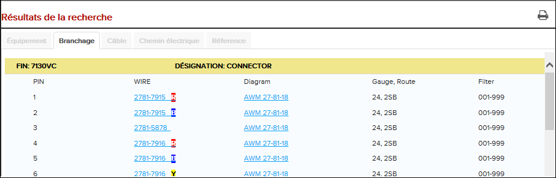

Les résultats de recherche de l'onglet Recherche de connexion révèlent les câblages reliés à un composant sélectionné.
Effectuer une recherche de connexion comme décrit dans Rechercher de connexion.
Les résultats de la recherche s'affichent dans l'onglet Recherche de
connexion sous les champs de recherche. Voir au tableau suivant pour
certains types d'informations affichées:
Remarque : Les catégories d'informations
disponibles sur la page de résultats de recherche varient en fonction du
type de recherche.
| L'identifiant | La description | L'activité |
|---|---|---|
| PIN | Numéro de Pin | N/A |
| BUNDLE | Numéro de Bundle | Cliquez sur le lien pour ouvrir le lot dans l'onglet Câblage. |
| WIRE | Numéro de câblage | Cliquez sur le lien pour ouvrir le câblage dans l'onglet câblage. |
| DIAGRAM | Schéma de câblage | Cliquez sur le lien pour ouvrir le diagramme de câblage dans la fenêtre Graphique. Dans les diagrammes SVG, votre sélection peut également être mise en évidence pour la rendre plus facile à localiser. |
| TT | Borne Type Code. Remarque : Cette information est optional pour
les données de Boeing et n'est pas applicable aux
données Airbus. Dans la Boeing WDM une liste de câblage
/ données techniques, si le composant (EIN) est un Borne
block, ce TT serait présent si une donnée de valeur
applicable est fournie par Boeing.
|
N/A |
| Gauge. Route |
Gauge: Mesure de la taille de câblage. Route: La route pour la câblage. |
N/A |
| Filter | Informations d'applicabilité / d'efficacité | N/A |

Les résultat de recherche de connexion
À partir de l'espace Résultats de la recherche,
cliquez sur l'icône  Imprimer les résultats de la recherche pour imprimer
les résultats de la recherche au format PDF.
Imprimer les résultats de la recherche pour imprimer
les résultats de la recherche au format PDF.